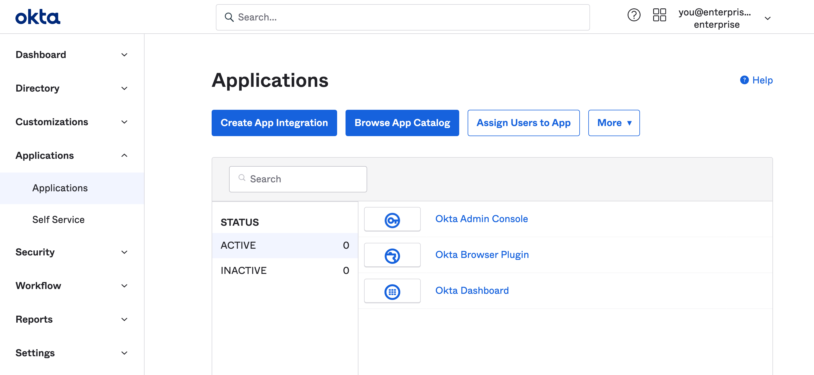
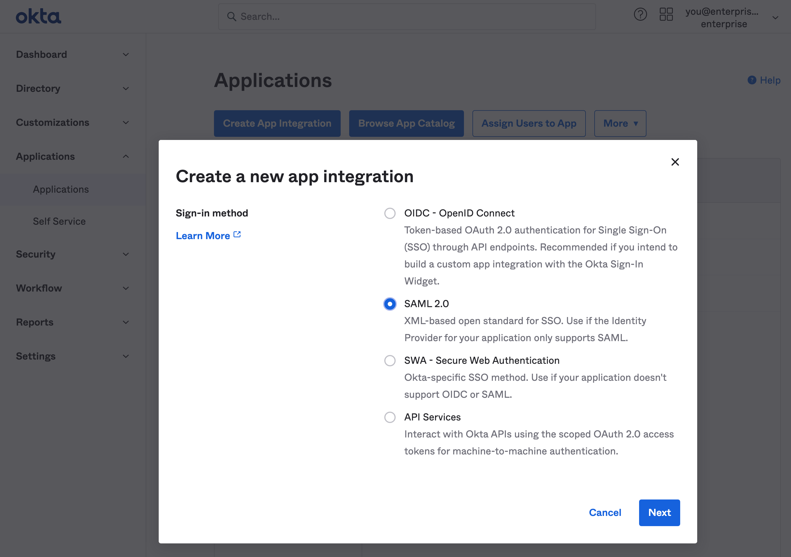
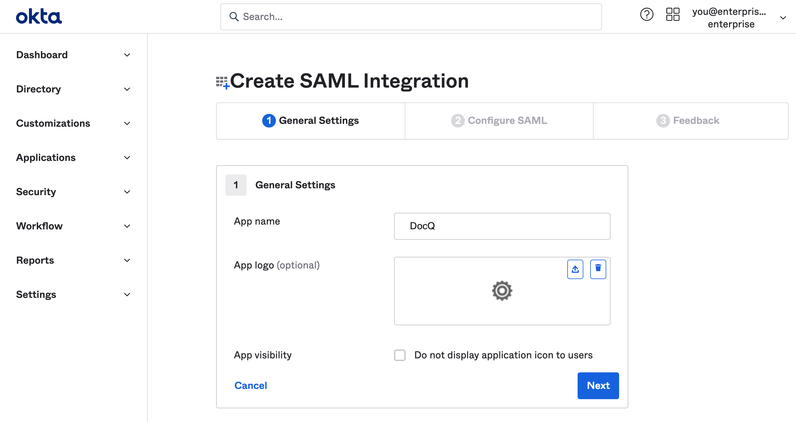
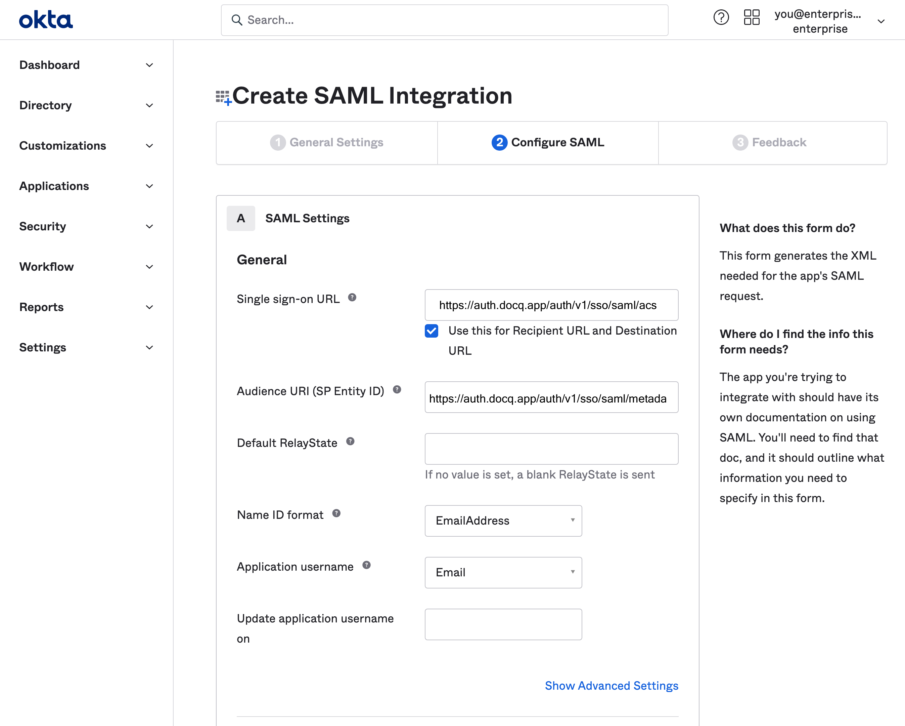
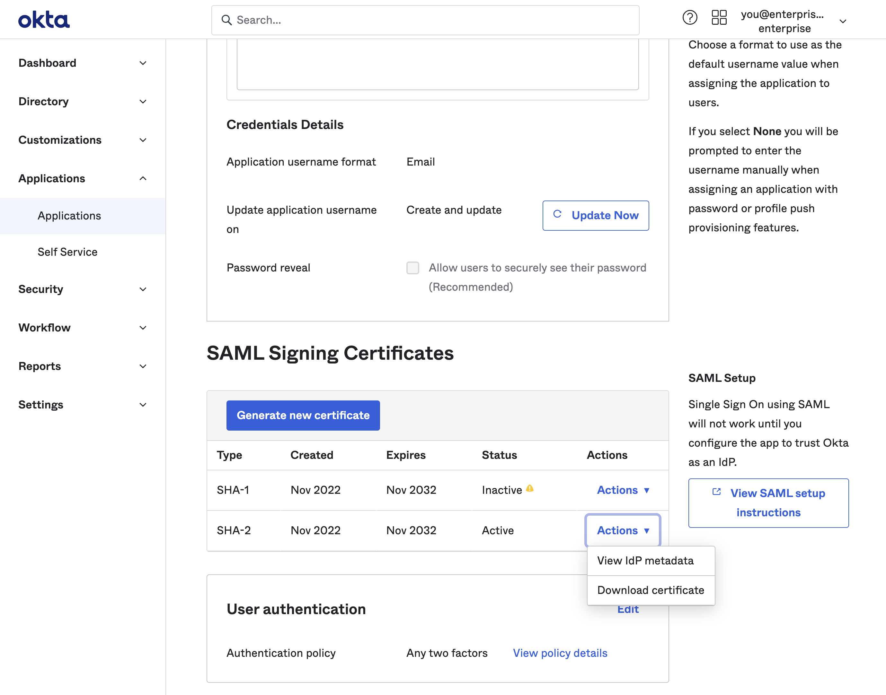
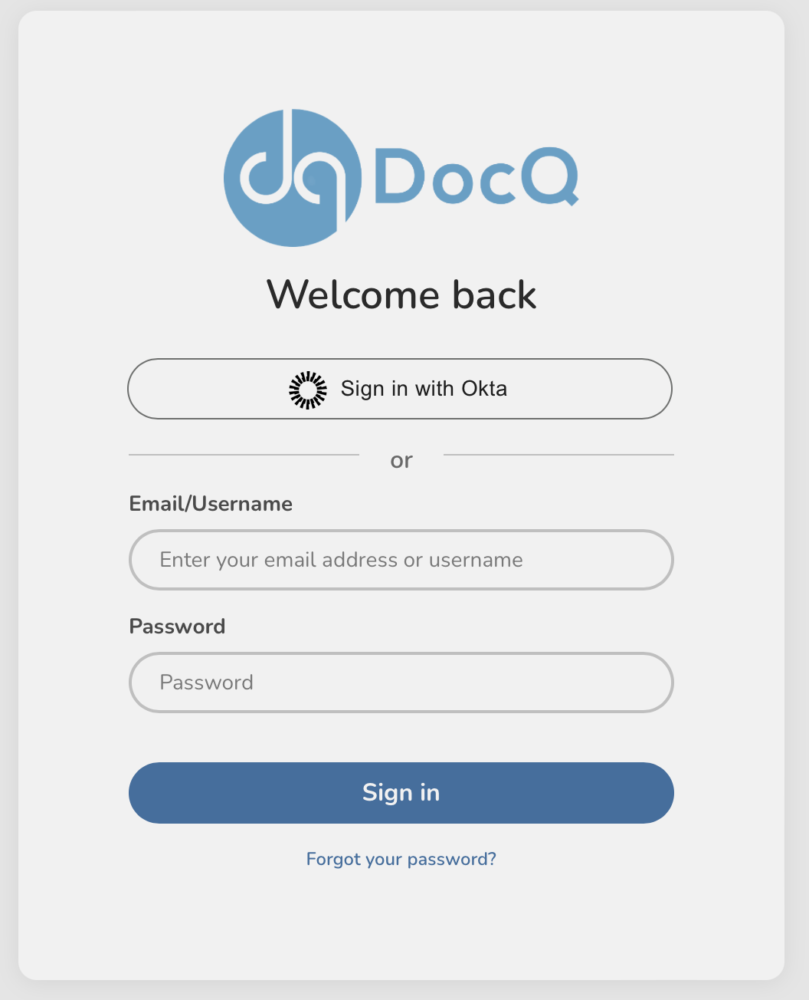

Introduction
DocQ offers single sign-on (SSO) as a login option to provide additional account security for your team. This allows company administrators to enforce the use of an identity provider when logging into DocQ. SSO improves the onboarding and offboarding experience of the company as the employee only needs a single set of credentials to access DocQm which can also be revoked easily by an administrator.
We support practically all identity providers that support the SAML 2.0 SSO protocol. This documentation has been prepared for commonly used identity providers to help you get started. If you use a different provider, our support team stands ready to support you.
There are some important considerations for enabling SSO within your organization. We suggest reading the overview section so that SSO is properly set up for your users.
Overview
Once SSO has been enabled for your instance, every user within it will automatically be able to log-in using the enabled identity providers (IdP). Each user within an instance is matched to their IdP's identity using the email address the user is created within DocQ. This means that if an SSO user with the email max@mustermann.com tries to sign in to DocQ, using the SSO option, then their profile within the IdP must have max@mustermann.com as their email address.
The access permissions and groups of users must still be managed within DocQ, to ensure that their ability to access content within DocQ is restricted as required. Please note, this also means that every user that needs to access DocQ must be added to DocQ as well, as SSO will not automatically create users in DocQ. This is because your DocQ plan might have limitations on how many users are allowed within the platform.
Glossary
The amount of SSO and SAML acronyms can often be overwhelming. Here's a glossary which you can refer back to at any time:
- Identity Provider, IdP, or IDP An identity provider is a service that manages user accounts at a company or organization. It can verify the identity of a user and exchange that information with your Supabase project and other applications. It acts as a single source of truth for user identities and access rights. Commonly used identity providers are: Microsoft Active Directory (Azure AD, Microsoft Entra), Okta, Google Workspaces (GSuite), PingIdentity, OneLogin, and many others. There are also self-hosted and on-prem versions of identity providers, and sometimes they are accessible only by having access to a company VPN or being in a specific building.
- Service Provider, SP This is the software that is asking for user information from an identity provider. DocQ would be the SP in this case.
- Assertion An assertion is a statement issued by an identity provider that contains information about a user.
- EntityID A globally unique ID (usually a URL) that identifies an Identity Provider or Service Provider across the world.
- NameID A unique ID (the email address for DocQ SSO) that identifies a user at an IdP.
- Metadata An XML document that describes the features and configuration of an IdP or SP. It can be as a standalone document or as a URL. Usually (but not always) the
EntityIDis the URL at which you can access the Metadata. - Certificate DocQ trusts assertions from an IdP based on the signature attached to the assertion. The signature is verified according to the certificate present in the Metadata. Note that DocQ requires the certificate to be part of the Metadata in order to complete the setup.
- Assertion Consumer Service (ACS) URL This is one of the most important SAML URLs. It is the URL where DocQ will accept assertions from an IdP. Basically, once the identity provider verifies the user's identity it will redirect to this URL and the redirect request will contain the assertion.
- RelayState State used by DocQ to hold information about a request to verify the identity of a user. This is optional and commonly not used.
Identity Providers
Enterprise-level Single Sign-On (SSO) for an any identity providers compatible with the SAML 2.0 protocol. This is a non-exclusive list of supported SAML 2.0 identity providers:
- Google Workspaces (formerly known as GSuite)
- Okta, Auth0
- Microsoft Active Directory, Azure Active Directory, Microsoft Entra
- PingIdentity
- OneLogin
If you have issues with these, or other SAML 2.0 IdPs, please open a support ticket.
Generic SAML 2.0
The information below should help you configure SSO for your DocQ instance using any IdP that supports SAML 2.0. This generic information is usually enough for most IdPs.
Setup at IdP
Below is the SAML 2.0 configuration which you will need to know in order to complete setup at your IdP:
| Key | Value |
|---|---|
| EntityID | https://auth.docq.app/auth/v1/sso/saml/metadata |
| Metadata URL | https://auth.docq.app/auth/v1/sso/saml/metadata |
| Metadata URL (download) | https://auth.docq.app/auth/v1/sso/saml/metadata?download=true |
| ACS URL | https://auth.docq.app/auth/v1/sso/saml/acs |
| NameID | emailAddress |
Please note that support for Single Logout (SLO) is not available, since it is a rarely supported feature by identity providers.
Append ?download=true to the Metadata URL to download the Metadata XML file. This is useful in cases where the identity provider requires a file.
Setup at DocQ
Since SSO is a paid feature only enabled on a case-by-case basis, there is currently no front-end interface available to complete the setup of SSO within DocQ. Once the setup is done, you will need to provide the information in the table below to the DocQ support team (or your implementation team in case your instance will have SSO enabled at the very outset, and you have an implementation team from DocQ).
| Information | Format |
|---|---|
| Metadata | Once you setup the information provided above to your IdP, they will provide you with a metadata XML file or url. DocQ requires this in order to complete the SSO setup.Please note that if the IdP provides a URL, this URL must be accessible via the Internet, or else the setup will fail. It is also important to note that the IdP should be reachable from any IP address since DocQ may use multiple IPs to perform an authentication connection to the IdP. |
| Domains | Please provide a list of all the domains that your users profiles may utilize within the IdP's user profiles.For example, if the email addresses possible for your users are max@mustermann.com and maxine@mustermann.de, then you must communicate to DocQ that the domains that SSO should be enabled for are mustermann.com and mustermann.de.Users withe email addresses that use domains not provided in the list, will not be able to log in using SSO. |
You can use the https://secrets.ndmglobal.com service provided by DocQ's parent company, in order to transfer the information above securely. Send the one time link generated by this service to the DocQ support team (or your implementation team in case your instance will have SSO enabled at the very outset, and you have an implementation team from DocQ).
Okta
DocQ SSO using Okta via SAML 2.0. Follow the steps below in order to setup DocQ with SSO, while using Okta as your IdP.
Step 1: Choose Create App Integration in the Applications dashboard
Navigate to the Applications dashboard of the Okta admin console. Click Create App Integration.
Step 2: Choose SAML 2.0 in the app integration dialog
Supabase supports the SAML 2.0 SSO protocol. Choose it from the Create a new app integration dialog.
Step 3: Fill out General Settings
The information you enter here is for visibility into your Okta applications menu. You can choose any values you like. DocQ as a name works well for most use cases.
Step 4: Fill out SAML Settings
These settings let DocQ use SAML 2.0 properly with your Okta application. Make sure you enter this information accurately (the screenshot below also shows you what this should look like):
| Setting | Value |
|---|---|
| Single sign-on URL | https://auth.docq.app/auth/v1/sso/saml/acs |
| Use this for Recipient URL and Destination URL | ✓ |
| Audience URI (SP Entity ID) | https://auth.docq.app/auth/v1/sso/saml/metadata |
| Name ID format | EmailAddress |
| Application username | Email |

Step 5: Fill out Attribute Statements
Attribute Statements allow DocQ to get information about your Okta users on each login.
An email to user.email statement is required. Other mappings shown below are optional and configurable depending on your Okta setup.
Step 6: Obtain IdP metadata URL (or XML file) and share with DocQ
Before you can use SSO to login users into the DocQ platform, DocQ needs to finalize enabling single sign-on with your Okta application. To enable this, we will need the metadata URL (or XML file) and a list of domains
To do this scroll down to the SAML Signing Certificates section on the Sign On tab of the DocQ application in Okta. Pick the the SHA-2 row with an Active status. Click on the Actions dropdown button and then on the View IdP Metadata. This will open up the SAML 2.0 Metadata XML file in a new tab in your browser.
You now have two options:
- Share URL: Copy this URL and use the the https://secrets.ndmglobal.com service provided by DocQ's parent company, in order to transfer the information above securely. Send the one time link generated by this service to the DocQ support team (or your implementation team in case your instance will have SSO enabled at the very outset, and you have an implementation team from DocQ). The link usually has this structure:
https://<okta-org>.okta.com/apps/<app-id>/sso/saml/metadata. Or, you may, - Share XML file: Save the XML file and use the the https://secrets.ndmglobal.com service provided by DocQ's parent company, in order to transfer the information above securely. Send the one time link generated by this service to the DocQ support team (or your implementation team in case your instance will have SSO enabled at the very outset, and you have an implementation team from DocQ).
Along with the XML file or URL, please also send a list of all domain names that your users profiles may utilize within Okta's user profiles. For example, if the email addresses possible for your users are max@mustermann.com and maxine@mustermann.de, then you must communicate to DocQ that the domains that SSO should be enabled for are mustermann.com and mustermann.de. You can use the same secrets service provided above to share this information as well
DocQ's support team will get back in touch with you as soon as the setup of this data is completed. It usually takes 2-3 business days to configure this information for you. After that, you will be able to sign in users via their Okta account. You will even see a login button like in the screenshot below.
Clicking that button will allow your users to authenticate with Okta and then log in